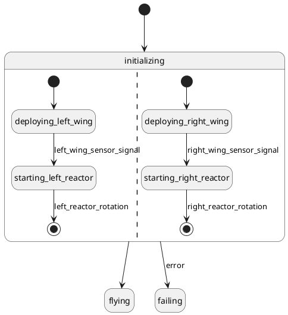

- Generated by
 1.13.2
1.13.2
|
Maki
|
You can ask maki::machine to call hooks before or after the state machine executes a non-internal transition in a region.
These hooks are configured by calling overloads and variants of the following functions:
maki::machine_conf::pre_external_transition_hook_crset();maki::machine_conf::post_external_transition_hook_crset().These hooks take the following arguments:
ctx, the context of the state machine;region (of type const maki::region<...>&), the region where the transition is happening;source_state (of type const maki::state<...>&), the source state;event, the event that triggered the transition;target_state (of type const maki::state<...>&), the target state.These hooks are particularly useful to log transitions. For example:
This is the kind of output you can obtain:
0 is the path to the first topmost region of the state machine. Also, see Note: The Null Dummy State Object for an explanation about the empty state names.When composite states are involved, a unique transition can trigger several invocations of the external transition hooks. This is due to the fact that external transition hooks see transitions from the point of view of every region.
Consider the state machine below, which defines the behavior of some kind of plane:

Whenever an error occurs while, say, the plane is starting its left reactor and deploying its right wing, the external transition hooks log the following messages:
From the point of view of the topmost region (path 0), a transition from initializing to failing occurs and triggers these subtransitions:
initializing (path 0/initializing/0), a transition from starting_left_reactor to nothing;initializing (path 0/initializing/1), a transition from deploying_right_wing to nothing.These transitions to nothing happen because, from the point of view of the parent region, the source state is exited but no target state is entered.
In some cases, the source_state and target_state parameters can be given maki::states::null, a dummy maki::state object whose pretty name is an empty string.
This dummy state is used to represent: